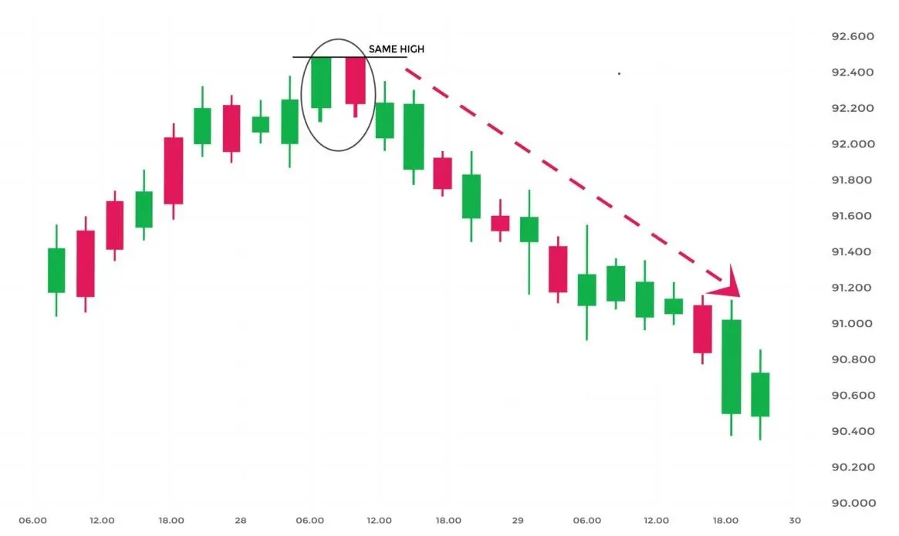

ट्वीज़र टॉप पैटर्न एक ऊपर त्रेंड के अंत में बनने वाला एक बिशेष टॉप रिवर्सल कैंडलस्टिक पैटर्न है।
इसमें दो कैंडलस्टिक होते हैं, पहला कैंडलस्टिक बुलिश होता है और दूसरा कैंडलस्टिक बियरिश होता है।
दोनों ट्वीज़र कैंडलस्टिक लगभग एक ही ऊंचाई तक पहुंचते हैं।
| What does Tweezer Top Candlestick Pattern tell us? |
जब ट्वीज़र टॉप कैंडलस्टिक पैटर्न बनता है तो पिछला ट्रेंड एक उत्तरी दिशा का था।
एक बल्लिस्टिक कैंडलस्टिक बनता है जो चल रहे उत्तरी दिशा के कंटिन्यूएशन की तरह दिखता है।
अगले दिन, दूसरे दिन के बियरिश कैंडल के उच्चतम स्तर में एक विरोध स्तर का संकेत होता है।
बैल्स लगातार कीमतों को ऊपर ले जाने की कोशिश करते हैं, लेकिन अब वे उच्चतम मूल्यों पर खरीदने को तैयार नहीं हैं।
जब दोनों कैंडलस्टिक लगभग एक ही ऊंचाई तक पहुंचते हैं तो यह संकेत देता है कि वहाँ प्रतिरोध की शक्ति है और उत्तरी दिशा बदलकर दक्षिणी दिशा में बदल सकती है।
इस बियरिश रिवर्सल को अगले दिन बियरिश कैंडल बनने पर पुष्टि की जाती है।
| Importance of this pattern: |
जब ट्रेडर्स चार्ट्स पर ट्वीजर टॉप और बॉटम कैंडलस्टिक पैटर्न के गठन को देखते हैं, तो उन्हें सावधान होना चाहिए कि एक रिवर्सल होने जा रहा है।
जब यह रिवर्सल पैटर्न बनता है, तो वे अपनी पोजीशन स्क्वेयर ऑफ कर देना चाहिए।
वे टेक्निकल इंडिकेटर के साथ ट्वीजर कैंडलस्टिक पैटर्न के गठन की पुष्टि भी करना चाहिए।
| Key Takeaways: |
